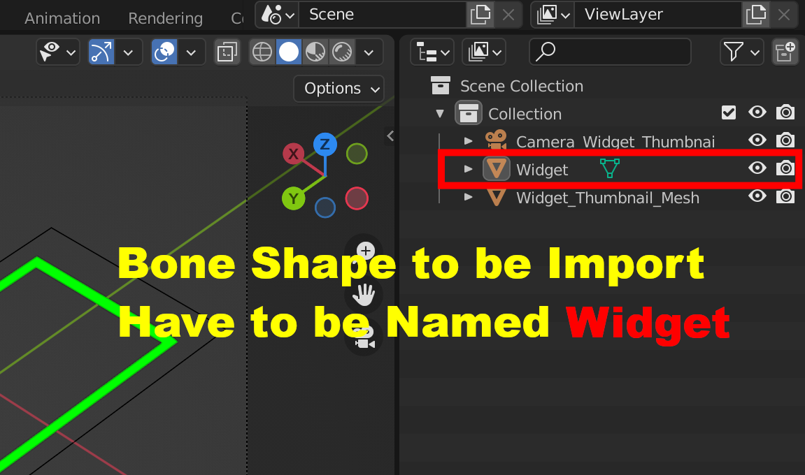
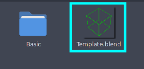

Cuztomize Your Own Custom Bone Shape
The Directory that stores the Widgets is in
Bonera_Toolkit/Widgets/
You can Access this Directory Manually, or Click the Open Bone Shape Folder in Bone Shape Tab in Preferences

The Folders in here Are the Catagories, You Create New Folder for New Catagory
You Place Your Bone Shape Blend File in your Catagory Folder
IMPORTANT
You Must Name your Bone Shape Object You want to be imported as Widget
Your Thumbnails Will Be Your Scene Camera, Make Sure to View the Camera When you Save Your File.
Info
Ideally You Should Set the Blend File to be Square Shape (For Example: 1080x1080)
Object Without Faces Will not Show in Thumbnail, But You can Have A separated Object display in the camera for thumbnail
Info
The Addon will only Import the Object Name “Widget”
Template
There is a Template.blend in the Widgets Folder, You can use that as a Base, Remove the Widget Object and Replace it with your Own Bone Shape (Make sure to name it Widget)
Info
If You use the Template, You can Copy the Geometry Nodes Modifier From Widget_Thumbnail_Mesh Object to A Copy of Your Widget,
That Modifier will turn your Wireframe into Geometry so that it can be seen in the thumbnail
You Will Need to Restart Blender For the Bone Shapes to Be Updated